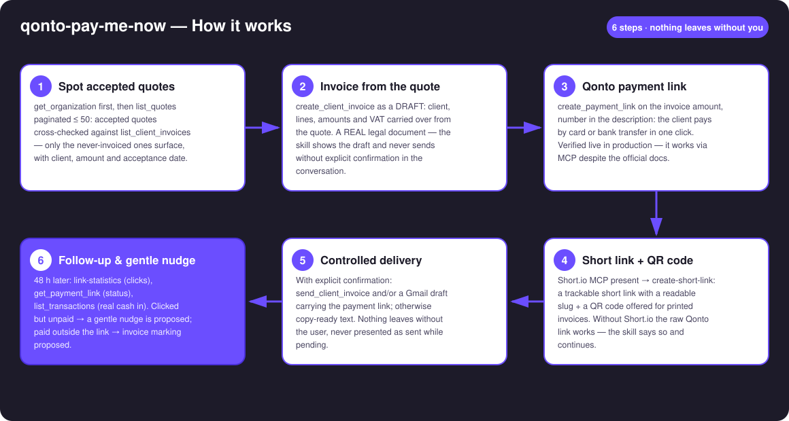
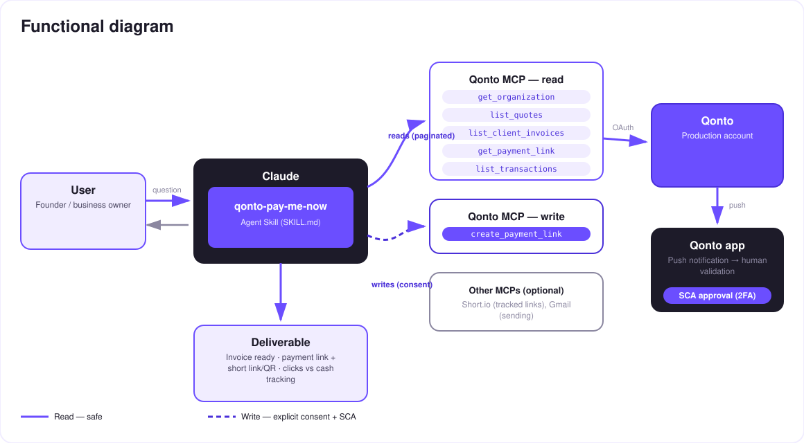

From quote to cash, no friction — an accepted quote becomes an invoice, a payment link, and money in the account.
The freelance black hole: the client says yes to your quote… and then nothing happens. The invoice waits, the payment waits even longer — every day between the handshake and the money is cash you've earned but can't touch. The skill runs the whole cycle in one conversation:
Quotes cross-checked against existing invoices — only the accepted, never-invoiced ones surface, with client, amount and date.
Draft first, REAL document: reviewed line by line, sent only after your explicit confirmation.
The client pays by card or bank transfer in one click. Trackable Short.io short link + a QR code for printed invoices.
Clicked but unpaid after 48 h → a soft reminder is proposed, drafted — never sent on its own.
Would someone use this on a Monday morning? It's what you run the second a client says yes.
| Prerequisite | Detail | Required |
|---|---|---|
| Qonto production account | Adapts to any organization — get_organization first, nothing hardcoded | ✅ |
| Country | The quote → invoice → payment link cycle is identical for every Qonto country (FR, DE, ES, IT, AT, NL, BE, PT). Reminder wording: France fully covered; elsewhere the skill adapts and never invents local legal mentions | ℹ️ detected |
| Qonto MCP connected | Official connector (claude.ai / Claude Desktop), OAuth login | ✅ |
| Payment links activated | One-time activation in the Qonto app. If create_payment_link is refused, the skill says so and continues invoice-only | ⭕ recommended |
| Quotes created in Qonto | The skill starts from list_quotes; without quotes it can also start from any existing unpaid invoice | ⭕ |
| Short.io / Gmail MCP | Optional enrichments, detected dynamically: short link + click stats / sending. Absent → raw Qonto link + copy-ready text | ⭕ optional |

create_payment_link directly instead of trusting the doclist_transactions (amount ± 0.01, counterparty, reference) and mark_client_invoice_as_paid proposed with evidencevat_payment_condition: "on_receipts"): a faster payment literally accelerates the VAT cycle too — the skill points it out
This skill cannot move money out: a payment link is a way to receive a payment from your client — it has nothing to do with outbound transfers (which the MCP cannot execute anyway: any transfer request requires your own SCA in the Qonto app). The only three writes: an invoice (draft first, sent after your explicit go), a payment link you can deactivate anytime in the app, and a paid-marking — always proposed, never automatic.
| Link clicked? | Payment received? | Proposed action |
|---|---|---|
| ❌ No | ❌ No | Check delivery; offer to resend through another channel |
| ✅ Yes | ❌ No (> 48 h) | Gentle nudge — "the link is still active" — drafted, never auto-sent |
| ✅ Yes | ✅ Yes | Loop closed ✅ — confirmed in the report |
| ❌ No | ✅ Yes | Paid by plain transfer → reconciliation + mark_client_invoice_as_paid proposed |
| Output | Format | When |
|---|---|---|
| Conversation reply | Markdown tables: quote → invoice → link pipeline, follow-up matrix | Always — the baseline |
| The payment link (+ short link) | Qonto URL + Short.io short URL, ready to share | Every cycle |
| QR code | Image file/artifact encoding the link, for printed invoices | When the host renders files; otherwise the links are enough |
| Follow-up report | Clicks vs cash + proposed nudges | On demand / at D+2 |
The ≤ 3-minute demo attached to the PR walks through: the black hole → detection & invoice → payment link + short link → the QR code scanned on a phone, the Qonto payment page appearing → follow-up & nudge. It runs live on a real production account. The invoice is out, the payment link is live — before the handshake ends.
| Idea | Effort | Note |
|---|---|---|
| Deposit at signature: a partial payment link (e.g. 30%) the moment the quote is accepted | Medium | The same cycle, even earlier |
| D+2 follow-up reminder in the calendar (calendar MCP detected dynamically) | Low | Optional multi-MCP enrichment, in the spirit of the kickoff |
| Multilingual client messages (client's language detected) | Low | Qonto is pan-European |
| Collection dashboard: click-to-payment rate per client | Medium | Reuses link-statistics + list_transactions |
| Local legal mentions per country (DE · ES · IT…) | Medium | v1 = identical cycle everywhere, v2 = local wording |
delete_client_invoice afterwards